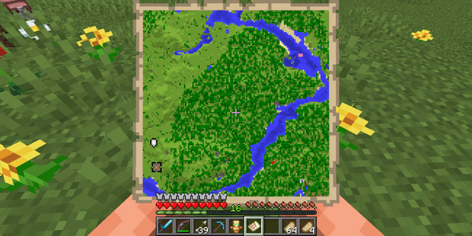
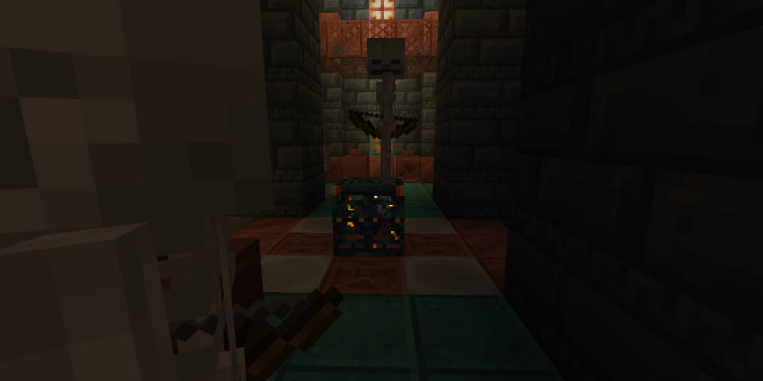
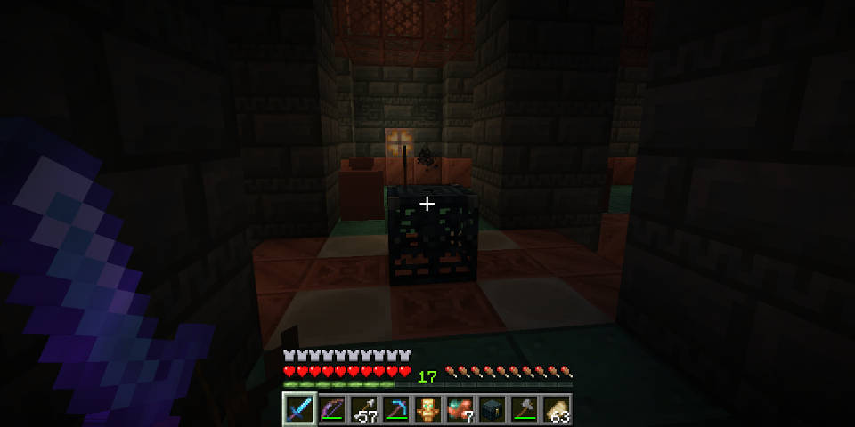
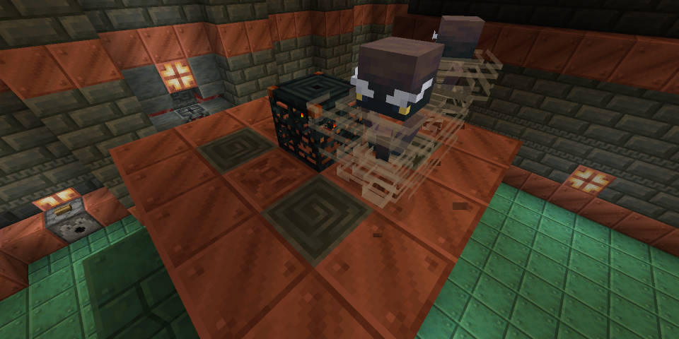

バージョン1.21について
主に追加された要素は、
トライアルチャンバー
新モブのブリーズ・ボグド
銅や凝灰岩のブロックの追加
自動作業台
です。
トライアルチャンバー
トライアルチャンバーに行くには、村人を製図台で製図家にして試練の間の地図を入手する必要があります。村人と取引して、取引レベルをあげないと取引できないこともあります。
地図に描いてある印の地下に、トライアルチャンバーがあります。
ツルハシをもって行きましょう。
トライアルチャンバーは、おもに銅や凝灰岩の装飾ブロックでできています。
その為、磨かれた凝灰岩や凝灰岩レンガを見たらトライアルチャンバーだと思います。
トライアルチャンバーは、大きくて、かなり複雑です。迷わないように道を覚えておきましょう。
攻略
トライアルチャンバーは、構成されます。また、噴水がある広間のような場所もあります。
トライアルチャンバーには、トライアルスポナーが生成されます。出てくるモブは。トライアルスポナー付近のブロックでわかります。
例えば銅の彫刻と骨ブロックならスケルトンが出てきます。
出てきたモブを全て
報酬は焼き鳥などが多いですが、試練の鍵が出てくることもあります。
試練の鍵は、宝物庫に使うことができます。
使うと、沢山のお宝が出て来ます。そして、極稀にヘビーコアが出て来ます。
新モブ、ブリーズ
体力は30
攻撃力は、1
ブリーズは、トライアルスポナーでしかスポーンしない珍しいモブです。
ブリーズは竜巻のような姿をしていて、その姿のとおり高い機動力を持っています。
それに、まとっている風で遠距離攻撃を反射します。
ウィンドチャージを発射して攻撃してきます。ブロック破壊は無いですが範囲ダメージと、高いノックバックがあります。
また、出してきたウィンドチャージを弾き返してブリーズを倒すと進捗「逆風」を達成できます。爆風の着弾地点に起こる小さな風の爆発は、ボタンを押したりする効果があります。
ちなみに、透明化のエフェクトをつけるとまとっている風は残ります。
ボグド
体力は16
攻撃力は3~5+毒
ボグドは、スケルトンの亜種です。スケルトンと